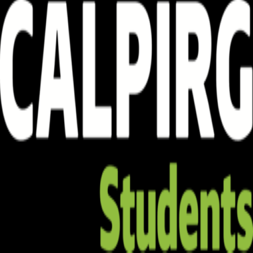
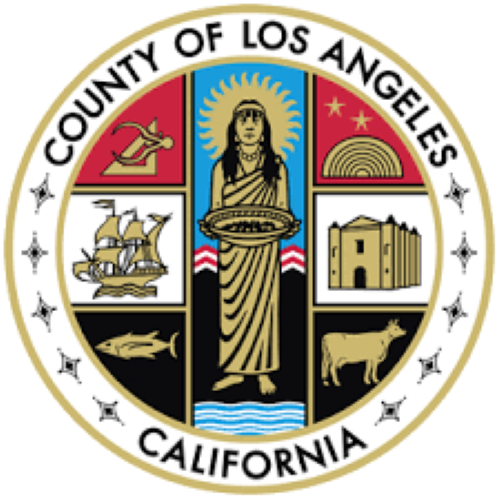
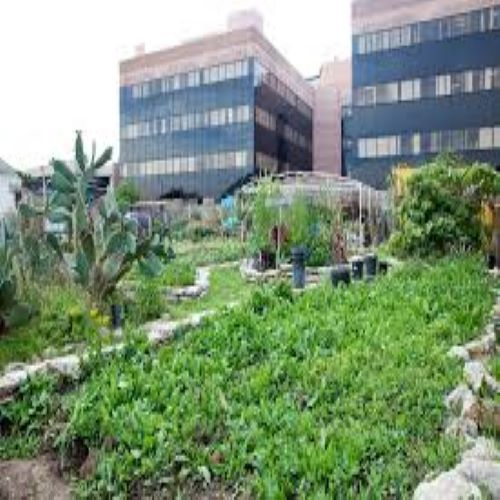
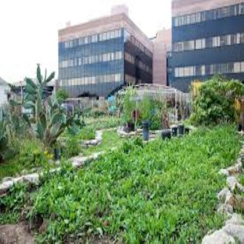

Jazmin Anguiano
I am political science-public major at the University of California Riverside. I chose this major because I am interested in current issues such as equality, environmental policy, and accessible health care for everyone. As a first-year undergraduate student, I aspire to participate in organizations and classes that teach me insights about the profession I am interested in. Apart from that I aspire to research study abroad programs and research ones as well to build on my strengths, and expertise but also to improve my weaknesses. At this university, I have been mainly taking introduction classes about world politics, dance, politics of the underdeveloped world, oceanography, and computer classes. Through, this list of enrolled classes I hopes to achieve my goals and improve my writing skills as well as my analysis and reading comprehension skills. Not only am I looking forward to participating in programs but I also want to participate in programs outside my major such Folkloric so I can balance academics and a social life. I think have a balancing is important because as I student I will learn to balance my priorities over my preferences. This a skill that is necessary in the work filed I wish to pursue; mainly, because the skill is responsive in a business and networking setting.
In the past, I have participated in the Los Angeles County Voting system. I took a six-hour before election day. In this training, I learned hot to use the new technological way of voting. The training focused on using VPN which had a tablet and remote essentials. I helped voters when the machines malfunctioned. I was a Spanish translator and I organized people in different lines. Apart from that, I assisted disabled people in helping. Then, I was a volunteer at the White Memorial Community garden. I harvested plants and learned how to flourish organic material. I informed visitors about the garden and its connection to hospital. Then, I helped organize events specifically held on Saturday.
Recently, I have been an intern in the CALPIRG student ran activist group at the University of California Riverside. In this organization, I engage in campaigns and in activist group activities. In this organization, we advocate for 100% renewable energy, to provide more food resources, and for affordable resources. I am specifically part of the Zero Hunger Campaign. In this campaign, we are trying to increase food resources for college students. In this campaign, we are trying to push more food resources for R’ Pantry to make sure students are receiving the necessary nutrients.
Experience
Volunteer
• Hosted Community Events in the Summer.
• •Public Speaker and gave tours to members of the community.
• Experience with Word, Infographic, Canva, iMovie
Election Worker
• Helped voters navigate through new technological way of voting
• Spanish translator
CALPIRG INTERN
• participated in activist activities
• part of Zero Hunger Campaign
• recruited new members
• collected fundraiser support
Education
UC Riverside
Portfolio




